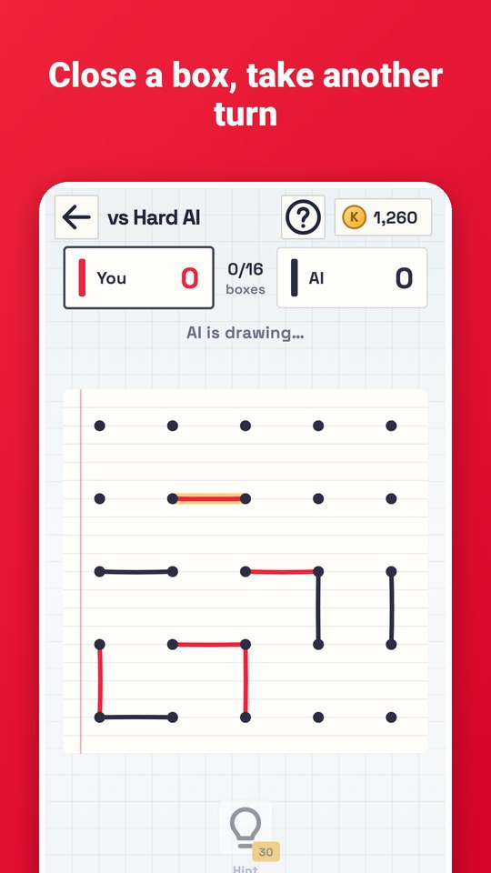
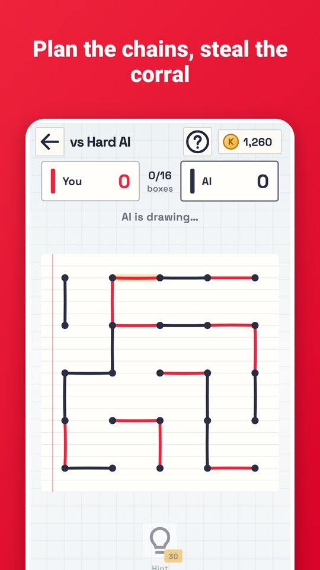
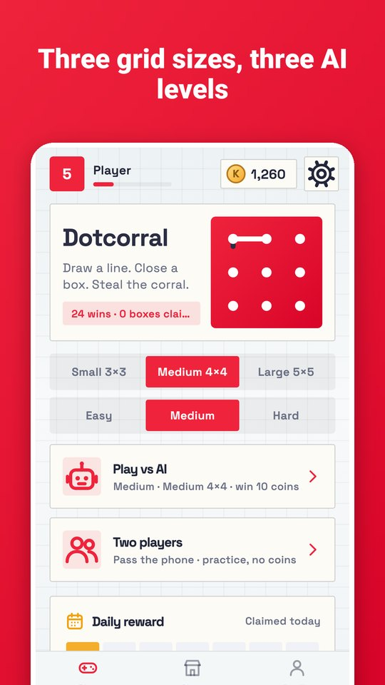
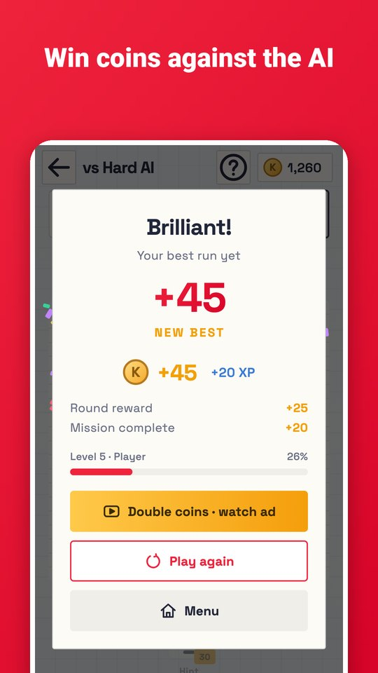
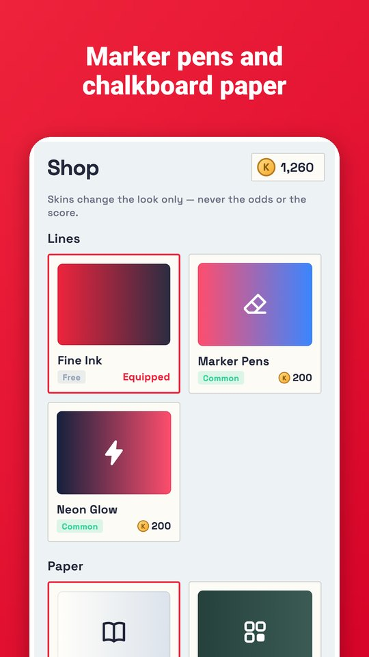

Dotcorral is dots and boxes, the game you played on the back of a notebook — now with a sharp AI. Take turns joining two neighbouring dots. Close the fourth side of a box and it is yours, and you draw again.
- Three AI levels: Easy to learn, Medium for a fair fight, Hard that plays the long chains.
- Three grid sizes: Small 3×3, Medium 4×4 and Large 5×5.
- Two players on one phone.
- A hint shows the strongest line when you play the AI.
- Daily rewards, missions and achievements.
- Line and paper styles: Marker Pens, Neon Glow and Chalkboard.